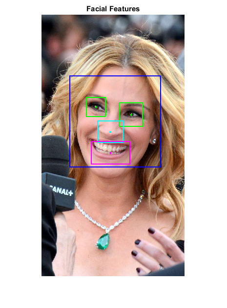

Facial Features Detection
A program to detect facial feature points using Haarcascade classifiers for face, eyes, nose and mouth.
The sample demonstrates facial feature points detection using Haarcascade classifiers. The program detects a face and eyes, nose and mouth inside the face. The code has been tested on the Japanese Female Facial Expression (JAFFE) database and found to give reasonably accurate results.
The classifiers for face and eyes can be downloaded from:
The classifiers for nose and mouth can be downloaded from:
Sources:
function facial_features_demo(im) % load input image of a face if nargin < 1 im = fullfile(tempdir(), 'face.jpg'); if exist(im, 'file') ~= 2 if true url = 'https://upload.wikimedia.org/wikipedia/commons/c/c9/Julia_Roberts_Cannes_2016_3.jpg'; elseif true url = 'https://upload.wikimedia.org/wikipedia/commons/3/33/Nicolas_Cage_2011_CC.jpg'; else url = 'https://upload.wikimedia.org/wikipedia/commons/8/8d/George_Clooney_2016.jpg'; end urlwrite(url, im); end img = cv.imread(im, 'Color',true); elseif ischar(im) img = cv.imread(im, 'Color',true); else img = im; end % haarcascade classifier files for face, eye, nose, and mouth detection % (only the face is required, others are optional) xml_face = fullfile(mexopencv.root(),'test','haarcascade_frontalface_alt.xml'); xml_eye = fullfile(mexopencv.root(),'test','haarcascade_eye_tree_eyeglasses.xml'); xml_nose = fullfile(mexopencv.root(),'test','haarcascade_mcs_nose.xml'); xml_mouth = fullfile(mexopencv.root(),'test','haarcascade_mcs_mouth.xml'); % Detect faces and facial features out = detectFacialFeatures(img, xml_face, xml_eye, xml_nose, xml_mouth); imshow(out), title('Facial Features') end function out = detectFacialFeatures(img, xml_face, xml_eye, xml_nose, xml_mouth) % input image as grayscale out = img; if size(img,3) == 3 img = cv.cvtColor(img, 'RGB2GRAY'); end % detect faces opts = {'ScaleFactor',1.15, 'MinNeighbors',3, ... 'ScaleImage',true, 'MinSize',[30 30]}; faces = cascadeDetect(img, xml_face, opts{:}); % for each face, detect facial features opts = {'ScaleFactor',1.20, 'MinNeighbors',5, ... 'ScaleImage',true, 'MinSize',[30 30]}; for i=1:size(faces,1) % draw face face = faces(i,:); out = cv.rectangle(out, face, 'Color',[0 0 255], 'Thickness',2); % eyes, nose and mouth will be detected inside the face (ROI) roi = cv.Rect.crop(img, face); % minimum object center height, used to filter detections % (mouth is expected to lie below nose, which in turn is below eyes) ymin = 0; % detect and draw eyes if ~isempty(xml_eye) eyes = cascadeDetect(roi, xml_eye, opts{:}); [out, ymin] = drawDetections(out, face, eyes, ymin, [0 255 0]); end % detect and draw nose if ~isempty(xml_nose) nose = cascadeDetect(roi, xml_nose, opts{:}); [out, ymin] = drawDetections(out, face, nose, ymin, [0 255 255]); end % detect and draw mouth if ~isempty(xml_mouth) mouth = cascadeDetect(roi, xml_mouth, opts{:}); [out, ymin] = drawDetections(out, face, mouth, ymin, [255 0 255]); end end end function rects = cascadeDetect(img, xml_file, varargin) % if missing, attempt to download XML file from two possible locations if exist(xml_file, 'file') ~= 2 [~, f, ext] = fileparts(xml_file); url = 'https://cdn.rawgit.com/opencv/opencv_contrib/3.2.0/modules/face/data/cascades/'; [~,status] = urlwrite([url f ext], xml_file); if status == 0 url = 'https://cdn.rawgit.com/opencv/opencv/3.2.0/data/haarcascades/'; [~,status] = urlwrite([url f ext], xml_file); end assert(status == 1, 'Failed to download'); end % detect and return Nx4 array of rectangles cascade = cv.CascadeClassifier(xml_file); rects = cascade.detect(img, varargin{:}); rects = cat(1, rects{:}); end function [out, ymin] = drawDetections(out, face, rects, ymin, clr) % filter detections ycenter = rects(:,2) + rects(:,4)/2; if ymin > 0 idx = ycenter > ymin; else idx = true(size(rects,1),1); end ymin = max(ycenter(idx,:)); % draw rectangle enclosing detection r = bsxfun(@plus, rects(idx,:), [face(1:2) 0 0]); out = cv.rectangle(out, r, 'Color',clr, 'Thickness',2); % draw center of detection c = bsxfun(@plus, rects(idx,1:2) + rects(idx,3:4)/2, face(1:2)); out = cv.circle(out, c, 3, 'Color',clr, 'Thickness','Filled'); end
Warning: Image is too big to fit on screen; displaying at 67%